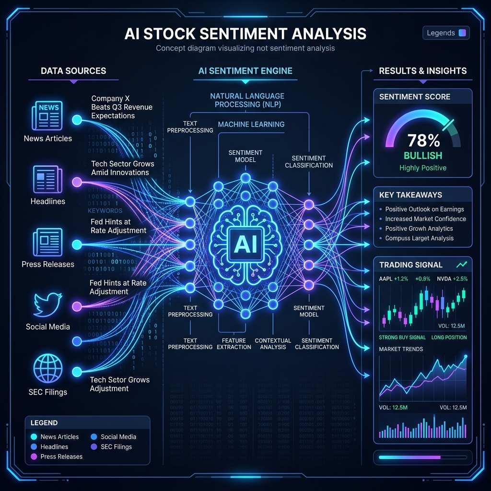
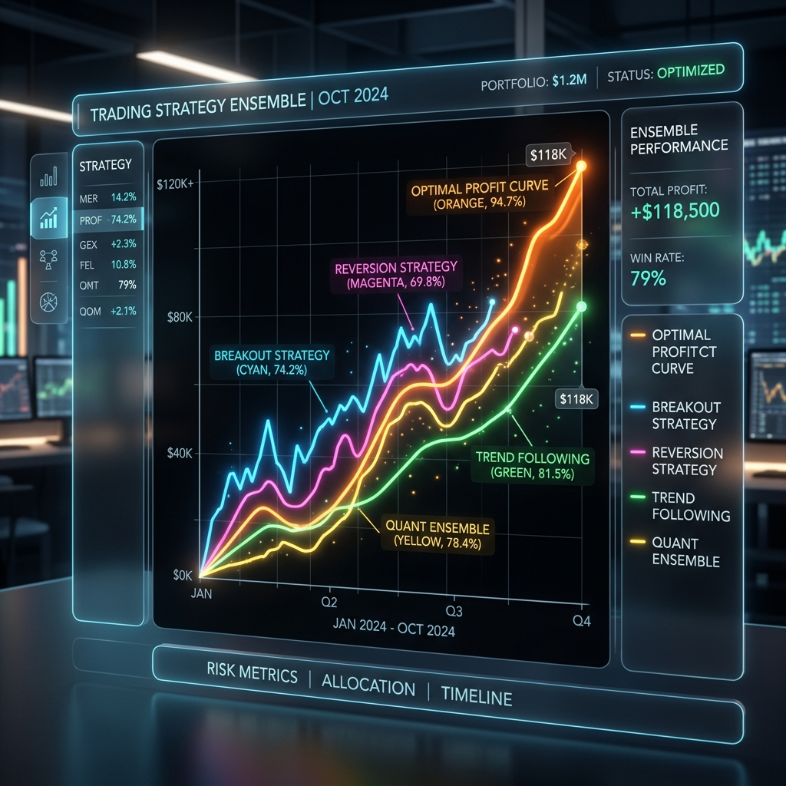
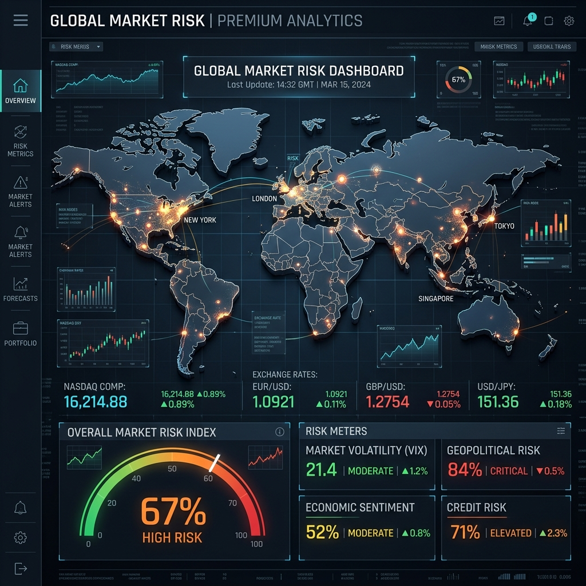

핵심 기술 아키텍처
K-Quant Pro는 단순한 자동화를 넘어선 스마트 금융 프레임워크입니다.
🧠 AI 뉴스 감성 분석
Google Gemini Pro API를 활용하여 실시간으로 쏟아지는 뉴스 제목과 공시 내용을 분석합니다.
- 초저지연 자연어 처리(NLP)를 통한 호재/악재 판별
- -100(강력 악재) ~ +100(강력 호재) 점수 산출
- 단순 차트가 놓치는 재료(Material) 기반의 선제적 대응

⚖️ 전략 앙상블 시스템
하나의 전략은 장세에 따라 실패할 수 있습니다. K-Quant Pro는 세 가지 상이한 전략을 동시에 운용하여 리스크를 분산합니다.
- 변동성 돌파: 강한 변동성이 터지는 주도주 추격 매수
- 평균 회귀: 과매도 구간에서 기술적 반등 포착
- 추세 추종: 대세 상승장에 올라타는 골든크로스 전략

🛡️ 글로벌 세이프 가드
한국 증시는 미국 증시와 환율에 종속적입니다. 시스템이 스스로 거시 지표를 감시하여 투자 비중을 조절합니다.
- 나스닥(Nasdaq) 지수 실시간 연동
- 원/달러 환율 급등 시 매매 자동 축소 및 중단
- 폭락장에서의 비자발적 손실을 원천 차단
